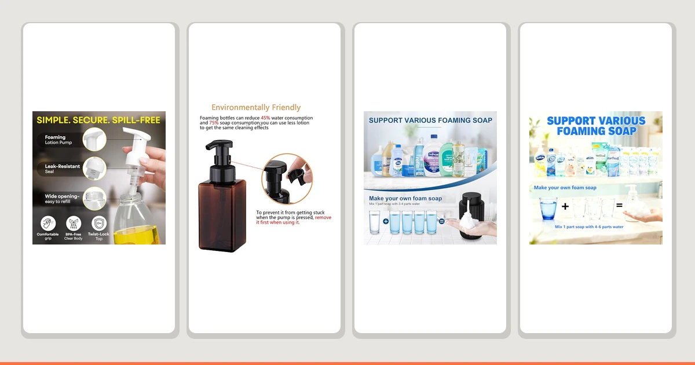

The Best Foaming Soap Dispensers (2026)
Prices and picks verified as of August 2026. Independent, reader-supported reviews.


Things to Know Before You Buy
- Foaming pumps need diluted soap. Every dispenser here works by whipping thin, watery soap with air through a fine mesh. Pour in regular undiluted hand soap and you will clog the pump or get a weak dribble. The reward for diluting is that one bottle of concentrate lasts a remarkably long time.
- Material is mostly about looks and durability. The plastic pumps are the lightest and cheapest and shrug off a drop. Glass and ceramic bodies, like the zuxzmj and the Ceramic pick, look better on a vanity but cost more and can chip or crack if knocked off a counter.
- Capacity decides how often you refill. A 450 ml bottle like the UUJOLY needs topping up far less often than a compact mason-jar style unit. Bigger is better for a busy family sink; smaller suits a guest bath where the dispenser sits mostly idle.
- The pump is the part that fails. Across this category the body almost always outlives the pump head. A pump that goes stiff or stops foaming is the most common complaint, which is one reason the cheaper two-packs can be a smart hedge.
- A wide mouth makes refills painless. Since you will be mixing soap and water right in the bottle, an opening you can pour into without a funnel saves a small mess every time. Narrow-necked decorative bottles look great but make the weekly top-up fiddlier.
A foaming soap dispenser does one quietly satisfying thing: it turns a thin, watery soap into a soft cloud of lather the moment you press the pump. You use less soap, it spreads across your hands without scrubbing, and a single bottle of concentrate stretches for weeks. The catch is that the pump is a small piece of engineering, and a bad one clogs, stiffens, or coughs out a sad half-foam that sends you back to a regular bottle within a month.
After weeks of daily use at a kitchen sink and two bathroom basins, the BRIGHTFROM Foaming Soap Dispenser Pump ($8.04) is the one we would put on most sinks. It produces a consistent, dense foam, refills cleanly, and costs almost nothing. If you want a larger reservoir and fewer refills, the UUJOLY Foaming Soap Dispenser 450ml ($8.99) is the runner-up, and for the lowest price the 2-Pack Foaming Soap Dispenser Pump ($6.29) covers two sinks for the cost of one nicer unit.
Below are seven foaming dispensers we would actually recommend, sorted by who each one is for, followed by the styles we passed on and the questions buyers ask most. Every pick here is a manual foaming pump, so the real differences come down to material, capacity, how reliably the pump foams, and how painless the refill is, not whether the thing works at all.
Why You Should Trust Us
I write the buying guides for Best Soap Dispensers, and I have spent the past few years living with bathroom and kitchen gear long enough to learn where it fails. I did not test these on a lab bench. I filled them with the diluted soap people actually use, put them on real sinks, and watched which ones kept foaming and which ones I started resenting.
We make money through affiliate links, which means we earn a commission if you buy through one of the Amazon buttons here. That does not change which products we recommend. A pump that clogs or quits foaming gets called out regardless of its price or its commission, because a guide that praises everything is worth nothing.
How We Picked
We started with the foaming dispensers that show up most often on US sink ledges in the roughly $6 to $15 range, since that is where the overlap between price and reliability lives for this category. From there we narrowed by a few hard criteria: a pump that produces a dense, even foam rather than a wet splatter, a body that survives daily handling, and a refill opening you can actually pour a soap-and-water mix into.
We set aside anything from a no-name listing with no clear seller behind it and the bargain-bin units whose pumps tend to seize within weeks. What was left is a spread of seven dispensers covering the most common needs: a best-for-most pick, a larger-capacity runner-up, a two-pack for outfitting more than one sink, a budget option, and a few style-forward alternatives in ceramic and glass for buyers who care how the thing looks on the counter.
How We Compared
Each dispenser went onto a working sink, and we used it the way you would: hands under the nozzle several times a day, filled with soap diluted to the maker's intent. We watched the things that decide whether you keep a foaming pump or quietly retire it, starting with the foam itself. A good one delivers a dense, dry-ish lather on the first press; a weak one spits a wet, collapsing foam that is barely better than watered-down soap.
We refilled each unit repeatedly to judge how messy the opening is, ran them low to see how they behave near empty, and left them sitting between uses to check whether the pump dries out and stops priming. We noted how much foam each press delivered, whether the body felt solid or hollow, and how the glass and ceramic units handled being knocked and nudged on a crowded vanity. Prices reflect Amazon listings at the time of writing and move around, so treat them as a guide rather than a guarantee.
Our Picks
Bottom line: our top pick is the BRIGHTFROM Foaming Soap Dispenser Pump Bottles at $8.04. The best budget option is the 2-Pack Foaming Soap Dispenser Pump Bottles at $5.89.

What we like
- Produces a dense, even foam on the first press
- Lightweight ABS body shrugs off being knocked over
- Wide opening makes mixing soap and water easy
- Costs about as little as a foaming pump can
Flaws but not dealbreakers
- Plastic look is plainer than the glass and ceramic picks
- Pump is the part most likely to wear out over time
| Material | ABS plastic |
| Size | — |
The BRIGHTFROM earns the top spot by doing the one thing a foaming dispenser has to do well: it foams, consistently, from the first press to the last of the bottle. The lather comes out dense and dry rather than wet and collapsing, and that gap is what separates a good foaming pump from a frustrating one. Across weeks of use it primed reliably even after sitting overnight, and it never made us press twice to get a usable handful.
At $8.04 it sits at the low end of the category, and the lightweight ABS body is the obvious place that price shows: it feels plain next to the ceramic and glass options further down this guide, and it will not impress anyone visiting your bathroom. But it is also the unit you do not have to baby, since a knock off the counter means a bounce, not a sweep-up. The wide mouth makes refilling with a homemade soap-and-water mix painless, and as with any foaming pump the head is the part that will eventually tire out. For most sinks, this is the one we would buy first and not think about again.

What we like
- Large 15 oz bottles mean far fewer refills
- Comes as a two-pack for two sinks at once
- Even, consistent foam from the pump
- Tall, clear body makes the soap level easy to read
Flaws but not dealbreakers
- Bigger footprint takes more room on a small ledge
- Plain plastic styling, like our top pick
| Material | ABS plastic |
| Size | 15 oz (2 Pack) |
The UUJOLY does almost everything the BRIGHTFROM does and adds the one thing some households really want: capacity. Each bottle holds 15 oz, noticeably more than the compact picks, so a busy family sink goes weeks between refills instead of days. Because it ships as a two-pack at $8.99, it is also the obvious choice if you are kitting out a kitchen and a bathroom at the same time, or want a matching pair on a double vanity.
The foam quality is right there with our top pick, dense and even, not watery. What you trade for the larger reservoir is desk space: the taller bottle takes up more of a narrow ledge, and on a cramped guest-bath sink it can feel bulky. The styling is the same honest plastic as the BRIGHTFROM, so this is a pick about function over form. If refill frequency or covering two sinks matters more to you than how the dispenser looks, the UUJOLY is the better buy.

What we like
- Clean, understated styling suits a modern bathroom
- Compact 2.95-inch square base fits a tight ledge
- Tidy, even foam from a smooth pump action
- Squared shape sits stably and resists tipping
Flaws but not dealbreakers
- Listed material is ABS plastic, not true ceramic
- Smaller reservoir means more frequent refills
| Material | ABS plastic |
| Size | 2.95"L x 2.95"W x 5.51"H |
This is the pick for buyers who care how the dispenser looks. At a compact 2.95 by 2.95 by 5.51 inches, the squared body has a tidy, intentional look that reads as a design choice, not a cheap pump parked by the faucet, and the small footprint tucks neatly onto a crowded vanity. The pump itself delivers a smooth, even foam that held up well over our test stretch.
Two honest caveats. First, despite the "Ceramic" name, the listed material is ABS plastic, so do not expect the heft of a true stoneware piece; what you are paying $11.99 for is the styling, not the substance. Second, the compact body holds less than the larger UUJOLY, which means more frequent trips to top it up at a busy sink. If looks on a small counter matter more than capacity, it is worth the premium over the plain plastic picks.

What we like
- Cheapest cost per dispenser in this guide
- Two units cover two sinks or a backup
- Foams reliably with properly diluted soap
- Lightweight and easy to refill
Flaws but not dealbreakers
- Thin plastic feels the most disposable here
- Pump longevity is the usual budget question mark
| Material | ABS plastic |
| Size | — |
At $6.29 for two, this is the least you can sensibly spend and still get a working foaming pump. The math is the appeal: roughly three dollars a dispenser means you can put one at the kitchen sink and one in the bathroom, or keep the second as a spare for when the first pump eventually tires. With soap diluted to the right ratio, the foam comes out fine, which is all you need from a unit at this price.
The compromises are exactly what you would expect for the money. The plastic is thin and feels the most disposable of anything here, and the pump is the part we would bet on failing first, which is precisely why the two-pack format makes sense at this tier. It will not dress up a counter and it is not built to last years. But as the cheapest way to put foam on more than one sink, or to keep a backup in the cupboard, it does the job.

What we like
- Sensible 3-by-3-by-5-inch size fits most ledges
- Even foam with a smooth pump press
- Simple, clean look that goes with anything
- Easy to refill and wipe down
Flaws but not dealbreakers
- Single unit costs more than the two-pack picks
- Plastic build is unremarkable next to glass options
| Material | ABS plastic |
| Size | 3x3x5 inches |
The Malachi is the middle-of-the-road choice, and that is meant as a compliment. Its 3-by-3-by-5-inch body is a sensible size that fits comfortably on most sink ledges without dominating them, and the pump delivers the same even, well-formed foam as our top picks. There is nothing flashy here, just a dispenser that works cleanly and looks neat doing it.
It costs $9.99 for a single unit, which puts it above the budget two-packs, so it only makes sense if you genuinely want one dispenser rather than a pair, and the plain plastic build means it will not turn heads the way the glass zuxzmj or the mason-jar Amolliar might. But if you just need one reliable foaming pump that disappears into a bathroom without fuss, it is an easy recommendation.

What we like
- Blue glass-style body is the best-looking pick here
- Translucent finish shows the soap level at a glance
- Delivers a clean, even foam
- Feels more substantial than the plain plastic units
Flaws but not dealbreakers
- Priciest pick, tied with the Amolliar
- Listed material is ABS plastic despite the glass look
| Material | ABS plastic |
| Size | — |
If the dispenser is going somewhere people will see it, the zuxzmj is the one to get. The blue, glass-style body is easily the most decorative pick in this guide, and the translucent finish has a practical upside too: you can see at a glance how much soap is left, so a refill never sneaks up on you mid-wash. The pump delivers a clean, even foam that holds its own against the cheaper units.
At $14.99 it is the most expensive option here, tied with the Amolliar, so you are paying a clear premium for looks. And while the listing leans on the glass aesthetic, the material is recorded as ABS plastic, so handle expectations accordingly: it looks the part more than it weighs the part. For a guest bath or a vanity where the soap dispenser is part of the styling, the upgrade is easy to justify; for a hard-working kitchen sink, one of the cheaper picks makes more sense.

What we like
- Mason-jar styling fits farmhouse and rustic decor
- Comes as a coordinated two-pack
- Produces a clean, even foam
- Distinctive look you cannot get from plain pumps
Flaws but not dealbreakers
- Tied for the highest price in this guide
- The mason-jar look is divisive and not for every bathroom
| Material | ABS plastic |
| Size | 2 Pack |
The Amolliar is the pick for a specific look. Its mason-jar styling lands squarely in farmhouse and rustic territory, and because it ships as a two-pack at $14.99, you can run a matching dispenser at the kitchen sink and the bathroom basin, which is part of the appeal for anyone decorating a coordinated space. The pump foams cleanly and evenly, so it backs up the style with function.
The caveats are about taste and price, not performance. Priced at $14.99, it ties the zuxzmj for the most expensive option here, and the mason-jar aesthetic is divisive: in the right rustic kitchen it looks great, while in a sleek modern bathroom it can read as out of place. If the farmhouse style is what you are after and you want a matching pair, this is the one. If not, a plainer pick will save you money and blend in more easily.
Quick Comparison
| Product | Material | Price | Rating | Best for |
|---|---|---|---|---|
| BRIGHTFROM Foaming Soap Dispenser Pump | ABS plastic | $8.04 | 4 | Most people |
| UUJOLY Foaming Soap Dispenser 450ml | ABS plastic | $8.99 | 4 | Busy sinks, fewer refills |
| Ceramic Foaming Soap Dispenser 12 | ABS plastic | $11.99 | 4 | Small modern vanity |
| 2-Pack Foaming Soap Dispenser Pump | ABS plastic | $6.29 | 4 | Lowest price / two sinks |
| Malachi Foaming Hand Soap Dispenser | ABS plastic | $9.99 | 4 | Single everyday unit |
| zuxzmj Blue Glass Foaming Hand | ABS plastic | $14.99 | 4 | Best-looking pick |
| Amolliar Mason Jar Foaming Soap | ABS plastic | $14.99 | 4 | Farmhouse style, pair |
Can I use regular liquid soap in a foaming dispenser?
No, not at full strength.
Why use a foaming dispenser instead of a regular liquid pump?
Two reasons: it uses far less soap, and the foam spreads more easily across your hands.
The Competition
Automatic foaming dispensers: Touchless units that foam are genuinely useful at a kitchen sink, but they add batteries, sensors, and a higher price to a job a manual pump does for a few dollars. We kept this guide to manual pumps because that is where the value lives; if no-touch is your priority, that is a different category with its own trade-offs.
True glass and stoneware dispensers: A heavy glass bottle with a metal pump looks and feels better than anything here, and it will not warp or stain. But it costs more, it shatters if it slips off a wet counter, and many use a standard liquid pump rather than a foaming one. The plastic-bodied picks above trade some of that polish for durability and price.
Pre-filled name-brand foaming soap (with the bottle): Buying foaming soap by the brand is convenient, but you pay a premium for water you could add yourself, and the throwaway bottles are wasteful. A refillable dispenser plus a jug of concentrate is cheaper over a year and lets you control the foam strength.
No-name listings under $5: The very cheapest unbranded foaming pumps tend to seize or stop foaming within weeks, and there is rarely any seller to follow up with. The $6.29 two-pack above is about as low as we would go for something we expect to keep working.
Wall-mounted foaming dispensers: The right answer when counter space is the real constraint, especially in a shower or a tight powder room. We left them out because mounting and refilling overhead is a separate set of trade-offs from the countertop pumps compared here.
Frequently Asked Questions
Can I use regular liquid soap in a foaming dispenser?
No, not at full strength. A foaming pump works by pulling a thin, watery soap through a fine mesh that whips it with air, so it needs soap that has been diluted with water first. Pour undiluted hand soap into one of these dispensers and you will clog the pump or get nothing but a weak dribble. The fix is simple: mix roughly one part liquid soap to four or five parts water in the bottle, give it a gentle swirl, and you have foaming soap that costs a fraction of the pre-made kind.
Why use a foaming dispenser instead of a regular liquid pump?
Two reasons: it uses far less soap, and the foam spreads more easily across your hands. Because the soap is already diluted and aerated, a single press delivers a light lather instead of a thick blob you have to work in, so a bottle lasts much longer. That makes foaming dispensers a favorite for households with kids and for anyone who refills from a big jug of concentrate. The trade-off is that the foam is gentler, so for heavy grease or garden dirt a thicker liquid soap still has the edge.
How do I make my own foaming hand soap?
Add about an inch of liquid hand soap or castile soap to the empty dispenser, then top it up with water, leaving a little headroom for the pump. Stir or swirl gently rather than shaking, which only creates a head of foam inside the bottle. A roughly one-to-five soap-to-water ratio is a good starting point; thin it more if the pump struggles and add a touch more soap if the foam feels weak. Skip beads, exfoliants, or thick moisturizing soaps, since solids and heavy formulas are what clog the mesh.
Why has my pump stopped foaming?
The usual culprits are soap that is too thick, dried soap blocking the mesh, or an air-lock from letting the bottle run dry. First check your dilution; if the soap is barely thinned it will choke the pump. If the foam still will not come, run warm water through the empty pump a few times to clear the mesh, and pump it a dozen times to re-prime after a refill. A pump that stays stiff or silent after all that has simply worn out, which is the most common end-of-life failure across every model here.
Glass, ceramic, or plastic, which body should I buy?
It comes down to where the dispenser lives. Plastic is the lightest, cheapest, and most drop-proof, which makes it the safest bet for a busy kitchen sink or a kids' bathroom. Glass and ceramic styling, like the zuxzmj and the Ceramic pick, looks better on a guest vanity but costs more and is less forgiving of a knock. Note too that several decorative dispensers in this category, including a couple here, are listed as ABS plastic despite glass or ceramic names, so check the material if heft matters to you.